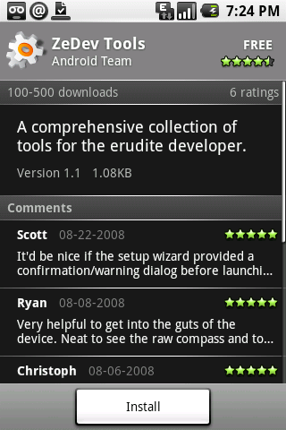

Who ever applied to this earned it.


Yesterday, my Tektronix 2445B oscilloscope arrived in the mail.
It’s got a 150MHz resolution and 4 channels, making it one powerful diagnostic tool for helping me repair my favorite stuff. I just need to get some better probes to replace the two that came with it. Sure they will work in a pinch, but I prefer ones that can clip or hook onto what’s being measured.
With this, I just might be able to repair the Eico 460 when I get it back from storage.


I feel like such a showoff, haha.
Photonix II ▰ Screenshot of software for Apple IIGS by FTA ☯93 | “If you need to back up 3.5” disks, you don’t need to look much further than Photonix II.”


